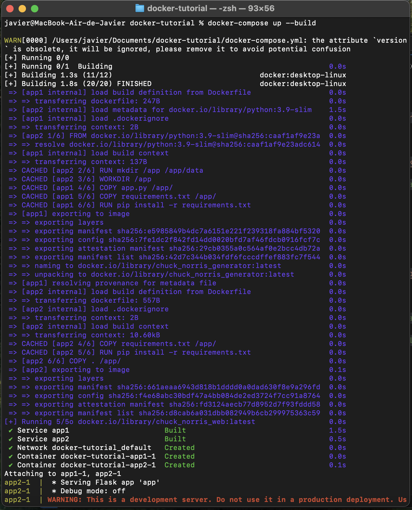
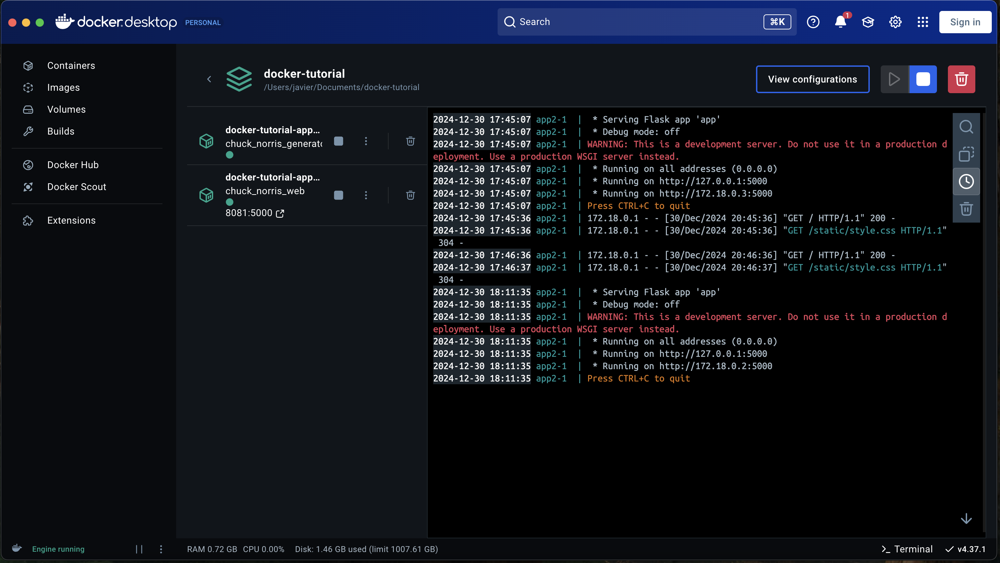

8. Docker Compose 🐙
¿Qué es docker compose y para qué sirve?
Docker Compose es una herramienta que nos permite definir y manejar múltiples contenedores Docker como una única aplicación. En lugar de correr cada contenedor manualmente con comandos largos, puedes configurar todos tus servicios (contenedores) en un solo archivo YAML (docker-compose.yml) y ejecutarlos juntos con un solo comando.
Beneficios de Usar Docker Compose
- Simplicidad y organización:
- Todos los servicios están definidos en un único archivo.
- Fácil de leer y entender, especialmente en proyectos con varios contenedores.
- Automatización:
- Puedes iniciar, detener y reiniciar todos los servicios con un solo comando.
- Define relaciones entre los servicios, como cuál debe iniciarse primero.
- Consistencia:
- Todos los miembros del equipo utilizan la misma configuración.
- No necesitas recordar largos comandos
docker run.
- Compartir recursos:
- Los contenedores pueden compartir volúmenes y redes, facilitando la comunicación y el intercambio de datos.
¿Por qué usar docker compose con nuestras apps?
En nuestro caso, tenemos dos aplicaciones, app1 y app2, que trabajan juntas:
app1:- Genera bromas de Chuck Norris usando una API y las guarda en un archivo
jokes.txt. - Este archivo se guarda en un volumen compartido (
data).
- Genera bromas de Chuck Norris usando una API y las guarda en un archivo
app2:- Lee las bromas de
jokes.txty las combina con imágenes de personajes de Rick and Morty. - Muestra todo esto en un sitio web estilo Bootstrap.
- Lee las bromas de
Docker Compose simplifica la forma en que estas dos aplicaciones trabajan juntas. Veamos por qué:
Creando el docker-compose
En el mismo directorio docker-tutorial que utilizamos la lección anterior, debes crear el archivo llamada docker-compose.yml Asegurate que quede en el mismo nivel que están app1, app2, y data
docker-tutorial/
├── app1/
│ ├── app.py
│ ├── requirements.txt
│ ├── Dockerfile
|── data/
├── app2/
│ ├── app.py
│ ├── requirements.txt
│ ├── Dockerfile
│ ├── static/
│ ├── style.css
├── docker-compose.ymlConfigurando el docker-compose
Abre con el editor el archivo docker-compose.yml, copia la configuración que está a continuación y pegala en el archivo:
services:
app1:
image: chuck_norris_generator
build:
context: ./app1
environment:
- API_URL=https://api.chucknorris.io/jokes/random
volumes:
- ./data:/app/data # Monta la carpeta 'data' del host en '/app/data' en el contenedor
restart: always
app2:
image: chuck_norris_web
build:
context: ./app2
environment:
- API_URL=https://rickandmortyapi.com/api/character
ports:
- "8081:5000"
volumes:
- ./data:/app/data # Monta la carpeta 'data' del host en '/app/data' en el contenedor
depends_on:
- app1 # Asegura que 'app1' se inicie antes de 'app2'
restart: alwaysCorramos junto a docker-compose
Abre una terminal y dirigete a docker-tutorial, y ejecuta el comando docker-compose up --build
cd docker-turorial
docker-compose up --buildSi toda va bien deberías ver como se están iniciando los contenedores con las dos apps.

Si abres docker desktop deberías tener un contenedor llamado docker-tutorialy si le das click deberías ver la orquestación de los dos contenedores

Ahora si ingresas al localhost:8081 en tu navegador deberías ver la app funcionando.

Beneficios específicos para este proyecto
- Orquestación de
app1yapp2:- Con
depends_on, nos aseguramos de queapp1(el generador de bromas) se inicie antes queapp2(el visualizador de bromas e imágenes). - Esto evita errores de sincronización.
- Con
- Volumen compartido (
data):- Ambos contenedores comparten el volumen
datapara leer y escribir las bromas. - Con docker compose, este volumen se configura fácilmente en el archivo YAML.
- Ambos contenedores comparten el volumen
- Gestión de Variables de Entorno:
- Cada app recibe la URL de su respectiva API (
Chuck Norrisparaapp1yRick and Mortyparaapp2) a través de variables de entorno.
- Cada app recibe la URL de su respectiva API (
- Facilidad para probar y reiniciar:
Si algo falla, puedes detener y reiniciar todo con:
docker-compose down docker-compose up
- Compatibilidad de puertos:
app2expone su contenido en el puerto 8081 para acceder al sitio web.
Resumiendo…
Usar Docker Compose con app1 y app2 nos permite:
- Ejecutar ambas aplicaciones juntas con un solo comando.
- Compartir datos entre los contenedores de manera eficiente.
- Asegurar que
app2no intente funcionar hasta queapp1haya comenzado a generar datos. - Hacer nuestro entorno más fácil de manejar y reproducir.
Docker compose no solo simplifica el trabajo, sino que también muestra el poder de la orquestación y la modularidad en proyectos Docker. 🚀